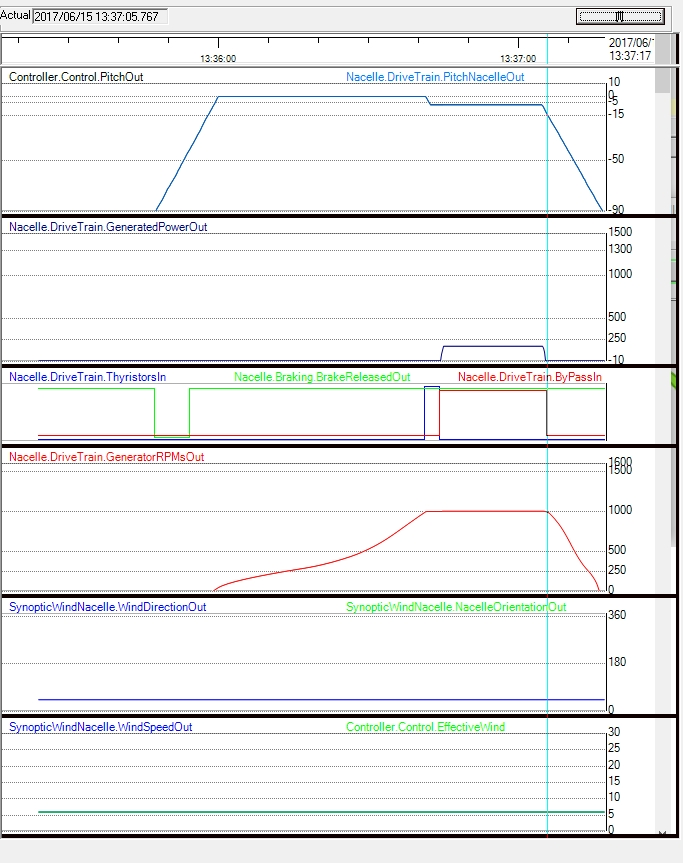

En esta práctica se trata de observar la evolución de las señales importante cuando se desconecta el generador de la Red (cutout). La operación de cutout se puede desencadenar manualmente desde el "Control Terminal" con el botón "STOP".
La operación de cutout se desencadena cuando el aerogenerador está en producción (con el generador conectado a la Red) y se pulsa el botón "STOP" en el sinóptico "Control Terminal", y acaba con la desconexión del generador de la Red de forma ordenada.
La principal característica es el control del pitch de forma que la potencia generada disminuye prácticamente a 0 antes de desactivar los Contactores Bypass de los Tiristores. Ver siguiente figura. Note que la velocidad de muestreo del registrador ("Segundos por pixel xx") se ha colocado a 200 ms.
